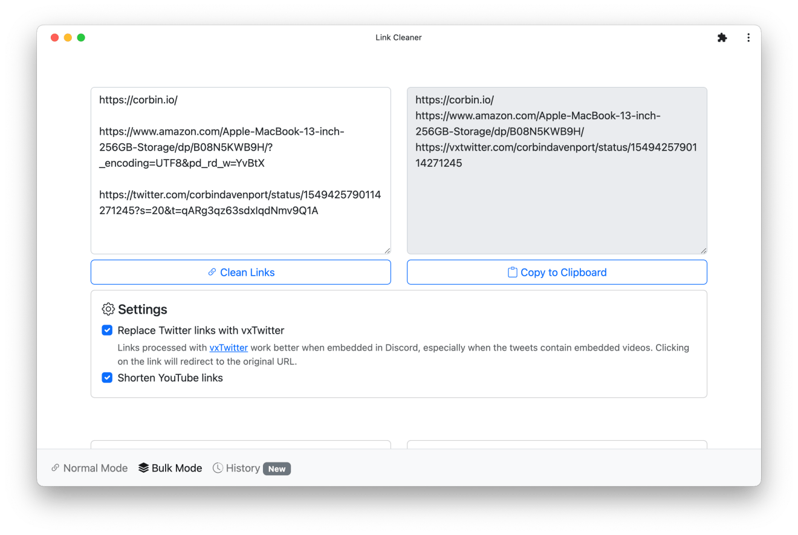
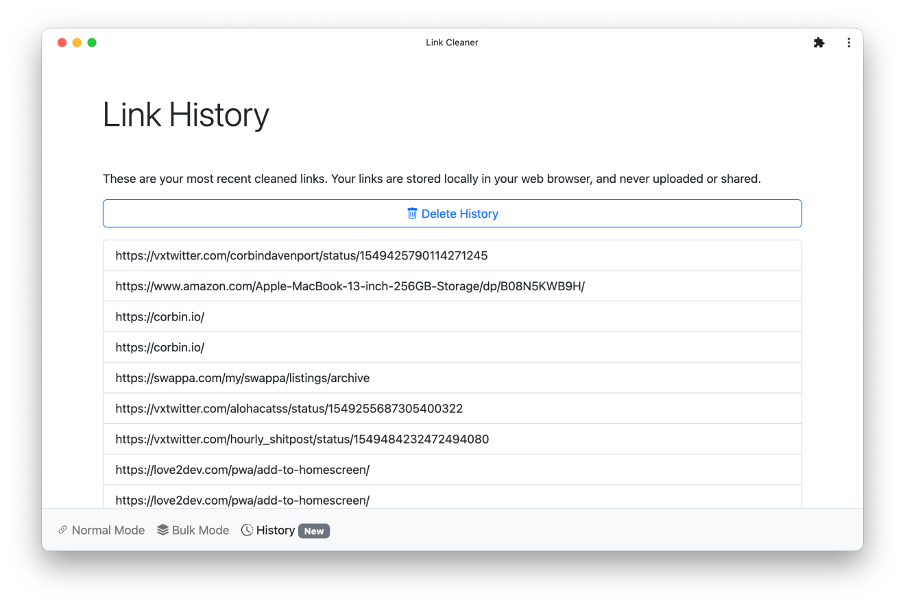
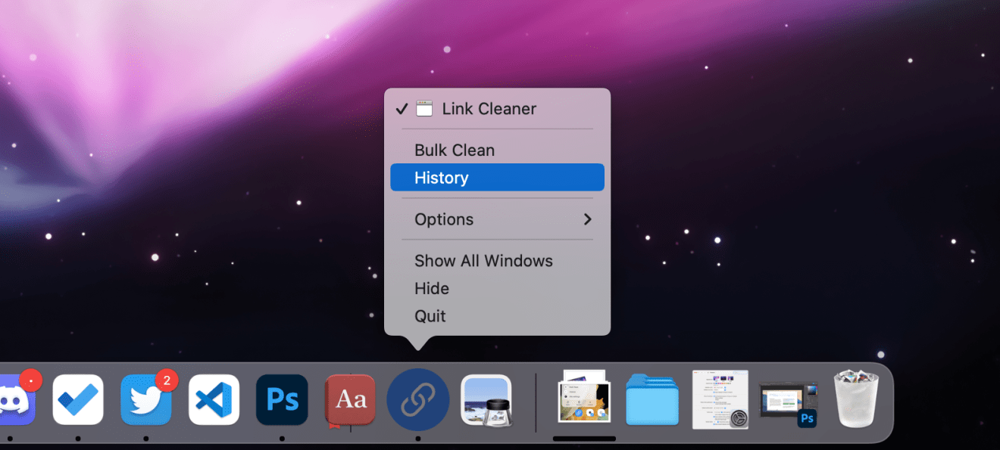

I released the first version Link Cleaner a little over a year ago as a simple web app for quickly removing junk from web links, like tracking attributes and search data. Even though it was relatively simple, it has become one of my most popular software projects. In the past month, Link Cleaner has had roughly 1.2K users, and 1.6K links have been cleaned.
I’ve rolled out a few updates to Link Cleaner recently, so I thought I should write about them!
Link Cleaner’s basic functionality hasn’t changed: there’s a giant text box at the top of the screen, and when you paste or type in a link, you get a cleaned version. The new link can be copied to the clipboard, shared to another application, or displayed as a QR code in one click. Link Cleaner is also a Progressive Web App, so you can “install” it to your device to open it like an application. Depending on your platform and browser (e.g. Chrome on Android, Edge on Windows), installing Link Cleaner will add it as an option to your device’s share menu.

The first recent update to Link Cleaner is a new Bulk Mode, accessible from the bottom navigation menu. You can paste a list of links, and then click one button to clean all of them instantly. All the same options are available from Normal Mode, too. The ability to clean multiple links at once was requested by at least a few people, and I’ll definitely keep working on it.
There’s also a new History page, which shows all recently-cleaned links for easy access later. The list of links is stored locally in your browser, just like the settings — I’m not recording links that anyone enters (only how many times links are cleaned).

I’ve also made a few design tweaks to Link Cleaner. The icon now has a circle shape when installed on desktop platforms, which looks much better than the old square icon. I’ve also adjusted the scaling and sizing, so it looks crisp on every platform.
The icon still looks a bit weird on macOS, since I can’t replicate the padding that macOS app icons are supposed to have without also changing the icons on other platforms, but it looks great everywhere else.

Link Cleaner also now uses the new app installation prompt on Chrome for Android. Finally, since there are now different pages in the app, I’ve added shortcuts for the Bulk Mode and History. When Link Cleaner is installed on Android, Windows, Chrome OS, and some other platforms, you can right-click or hold down on the icon to see the shortcuts.
I have a few more ideas for Link Cleaner, but I’m pretty happy with the recent improvements. You can try it out at linkcleaner.app, or check out the code at GitHub.